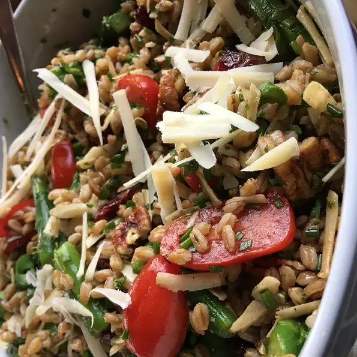

Farro Salad with Asparagus and Parmesan

Description
A light and delicious way to get your whole grains. Perfect salad for picnics, baby or bridal showers or just because!
Ingredients
- 2 cups farro
- ¾ pound fresh asparagus, trimmed
- 1 cup red and yellow cherry tomatoes, halved
- ¾ cup chopped walnuts
- ¾ cup dried cranberries
- ½ cup chopped fresh parsley
- ⅓ cup chopped fresh chives
- ¼ cup balsamic vinaigrette, or to taste
- 1 cup shaved Parmesan cheese, divided
- Soak farro in a large bowl of water for at least 12 hours. Drain.
- Fill a large pot with lightly salted water and bring to a rolling boil over high heat. Once the water is boiling, stir in the drained farro, and return to a boil. Reduce heat to medium, then cook the farro uncovered, stirring occasionally for 20 minutes. Reduce heat to low, cover, and continue simmering until tender, about 30 more minutes. Drain and allow to cool.
- Bring a large pot of lightly salted water to a boil. Add the asparagus, and cook uncovered until tender, about 3 minutes. Drain in a colander, then immediately immerse in ice water for several minutes until cold to stop the cooking process. Once the asparagus is cold, drain well, and chop. Set aside.
- Place farro, asparagus, tomatoes, walnuts, cranberries, parsley, and chives in a large bowl. Drizzle the balsamic vinaigrette over and sprinkle about 3/4 cups Parmesan cheese, then toss. Top with the remaining 1/4 cup of Parmesan cheese. Serve at room temperature.